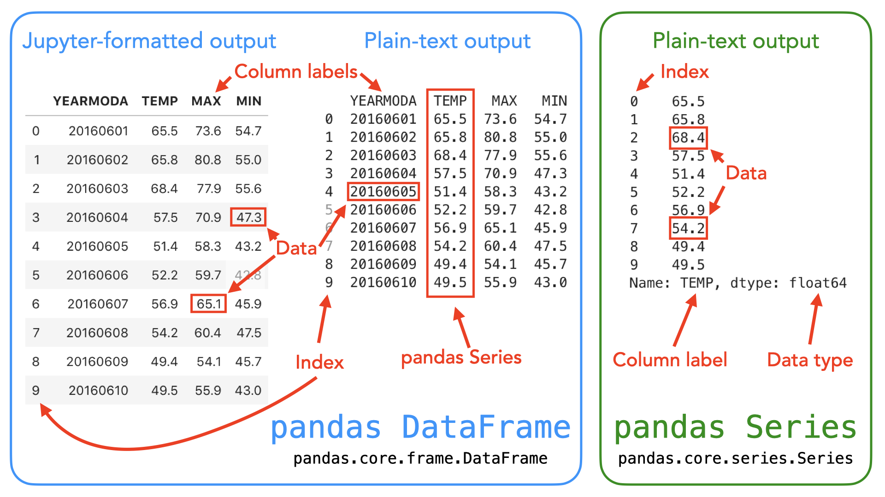
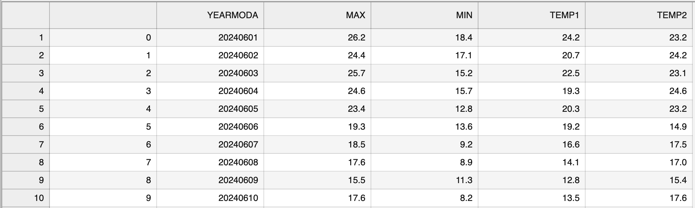
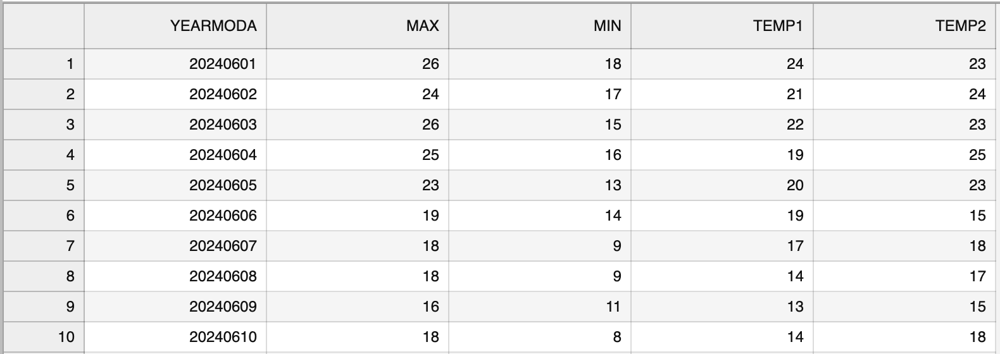

Getting started with data analysis#
What is pandas?#
The pandas Python library [1] is an easy-to-use, powerful data analysis toolkit. It is a mature data analytics framework that is widely used in different fields of science. The development of pandas started in 2008 and it is now maintained by an active developer community (McKinney, 2022).
pandas is a “high-level” package, which means that it makes use of several other packages in the background. It combines the performance of powerful Python libraries such as NumPy [2], Matplotlib [3], and SciPy [4].
One of the most useful features of pandas is its ability to interact with numerous data formats. It supports reading and writing data from/to formats including
CSV
JSON
HTML
MS Excel
HDF5
Stata
SAS
Python Pickle format
SQL (Postgresql, MySQL, Oracle, MariaDB, etc.)
For a full list of supported file formats and other features, please refer to the official pandas documentation and reference guide [5].
pandas data structures#
In pandas, table-like data are stored in two-dimensional DataFrame objects with labeled rows and columns. The pandas DataFrame was originally inspired by data frames that are in the R programming language. You can think of a DataFrame in pandas as a programmable spreadsheet. One-dimensional sequences of values are stored as a pandas Series. A single row or column in a pandas DataFrame is actually a pandas Series. You can think of a pandas Series as a clever list. These pandas structures incorporate a number of things we’ve already encountered earlier in this book, such as indices, data stored in a collection, and data types.

Figure 3.1. Illustration of the pandas DataFrame and Series data structures. A pandas DataFrame is a two-dimensional data structure used for storing and manipulating table-like data (data with rows and columns). A pandas Series is a one-dimensional data structure used for storing and manipulating a sequence of values.
As you can see from Figure 3.1, both the DataFrame and Series in pandas have an index that can be used to select values, but DataFrame objects also have labels to identify columns. In the following sections, we will use many of these features to explore real-world data and learn some handy data analysis procedures using pandas. For a comprehensive overview of pandas data structures, we recommend you have a look at the pandas online documentation about data structures [6] as well as Chapter 5 in McKinney, 2022.
Reading tabular data#
In the following sections, we will learn how to read data from a text file (data/kumpula-summer-2024.txt), which contains weather observations from the Kumpula neighborhood in Helsinki, Finland. The data were retrieved from Finnish Meteorlogical Institute’s data service [7] and it contains observed daily temperatures recorded at two times during the day (TEMP1: 10 a.m.; TEMP2: 2:00 p.m.), as well as the minimum and maximum temperatures from Summer 2024 (June 1st - August 31st, 2024) recorded by the Kumpula weather observation station in Helsinki. The date is stored in the YEARMODA column, where the first four numbers record the year, the next two represent the month, and the final two digits are for the day in the month. The file includes 92 rows of observations (one per day). The first fifteen rows in the file look like the following:
# Data file contents: Daily temperatures (TEMP1 (10AM), TEMP2 (4PM), min, ma...
# for June 1 - August 31, 2024
# Data source: Finnish Meteorological Institute - downloaded from open data ...
# Data processing: Extracted temperatures from raw data file, converted to
# comma-separated format - Extracted TEMP1 and TEMP2 and created YEARMODA co...
#
# Processed by Kamyar Hasanzadeh 15.09.2024
YEARMODA,MAX,MIN,TEMP1,TEMP2
20240601,26.2,18.4,24.2,23.2
20240602,24.4,17.1,20.7,24.2
20240603,25.7,15.2,22.5,23.1
20240604,24.6,15.7,19.3,24.6
20240605,23.4,12.8,20.3,23.2
20240606,19.3,13.6,19.2,14.9
Now that we have familiarized ourselves with the data, we can continue and see how to read the data using pandas. Let’s start by importing the pandas module. It is customary to import pandas as pd.
import pandas as pd
Next, we will read the input data file and store the contents of that file into a variable called data using the .read_csv() function.
data = pd.read_csv("data/kumpula-summer-2024.txt")
Our input file is a comma-delimited file, meaning that the columns in the data are separated by commas (,) on each row. The .read_csv() function uses comma as the default delimiter, hence we did not need to specify it separately in the command above. If all went as planned, you should now have a new variable data in memory that contains the input data.
It is quite common to have some other character instead of a comma separating the columns from each other. The .read_csv() in pandas is a generic function for reading text-based data files, supporting files separated by commas, spaces, or other common separators. The sep parameter can be used to specify which character is used as a delimiter. For instance sep=';', would be used when the columns in the data file are delimited with a semicolon (;). For a full list of available parameters for the read_csv() function, please refer to the pandas .read_csv() documention [8] or run help(pd.read_csv).
Pandas has several other functions for parsing input data from different file formats. For example, reading Excel files can be easily done using the .read_excel() function. Another useful function is .read_pickle(), which reads data stored in the Python pickle format. Check out the pandas documentation about input and output tools [9] for more details about reading data.
Let’s check the the contents of our data. You can print the contents of a DataFrame (or a snippet of it) simply by calling it by name (e.g., data). However, quite often you want to check only a selection of n rows from the start or end of the data set. For doing that, we can use the .head() method of the DataFrame object that will, by default, return the first five rows of the DataFrame. You can return any number of rows by adding that number inside the parentheses. For example, data.head(10) would return the first ten rows from the DataFrame called data.
data.head(10)
| # Data file contents: Daily temperatures (TEMP1 (10AM) | TEMP2 (4PM) | min | max) for Kumpula | Helsinki | |
|---|---|---|---|---|---|
| 0 | # for June 1 - August 31 | 2024 | NaN | NaN | NaN |
| 1 | # Data source: Finnish Meteorological Institut... | NaN | NaN | NaN | NaN |
| 2 | # Data processing: Extracted temperatures from... | converted to | NaN | NaN | NaN |
| 3 | # comma-separated format - Extracted TEMP1 and... | NaN | NaN | NaN | NaN |
| 4 | # | NaN | NaN | NaN | NaN |
| 5 | # Processed by Kamyar Hasanzadeh 15.09.2024 | NaN | NaN | NaN | NaN |
| 6 | YEARMODA | MAX | MIN | TEMP1 | TEMP2 |
| 7 | 20240601 | 26.2 | 18.4 | 24.2 | 23.2 |
| 8 | 20240602 | 24.4 | 17.1 | 20.7 | 24.2 |
| 9 | 20240603 | 25.7 | 15.2 | 22.5 | 23.1 |
Similarly, .tail() will return the last rows of the DataFrame (last five rows by default).
data.tail()
| # Data file contents: Daily temperatures (TEMP1 (10AM) | TEMP2 (4PM) | min | max) for Kumpula | Helsinki | |
|---|---|---|---|---|---|
| 94 | 20240827 | 20.5 | 15.3 | 17.9 | 20.4 |
| 95 | 20240828 | 21.6 | 14.2 | 18.7 | 21.3 |
| 96 | 20240829 | 21.9 | NaN | 16.6 | 21.8 |
| 97 | 20240830 | 24.6 | 16.0 | 20.7 | 23.5 |
| 98 | 20240831 | NaN | 13.7 | 13.9 | 18.7 |
Looking at the output from data.head() we can see that the first lines of the DataFrame look a bit weird. Several columns contain rows with NaN values. NaN stands for “not a number”, and might indicate some problem with reading in the contents of the file. Plus, we expected 92 lines of data, but the index values go up to 98 when we print the last rows of the data variable. Looks like we need to investigate this further.
As we can observe, there are some metadata at the top of the file giving basic information about its contents and source. This is not data we want to process, so we need to skip over that part of the file when we read it. Here are the 8 first rows of data in the text file (note that the 8th row is blank).
# Data file contents: Daily temperatures (TEMP1 (10AM), TEMP2 (4PM), min, ma...
# for June 1 - August 31, 2024
# Data source: Finnish Meteorological Institute - downloaded from open data ...
# Data processing: Extracted temperatures from raw data file, converted to
# comma-separated format - Extracted TEMP1 and TEMP2 and created YEARMODA co...
#
# Processed by Kamyar Hasanzadeh 15.09.2024
Fortunately, skipping over rows is easy to do when reading data with pandas. We just need to add the skiprows parameter when we read the file, listing the number of rows to skip (eight in this case). Let’s try reading the data file again, this time including the skiprows parameter.
data = pd.read_csv("data/kumpula-summer-2024.txt", skiprows=8)
Let’s see what the data looks like now.
data.head()
| YEARMODA | MAX | MIN | TEMP1 | TEMP2 | |
|---|---|---|---|---|---|
| 0 | 20240601 | 26.2 | 18.4 | 24.2 | 23.2 |
| 1 | 20240602 | 24.4 | 17.1 | 20.7 | 24.2 |
| 2 | 20240603 | 25.7 | 15.2 | 22.5 | 23.1 |
| 3 | 20240604 | 24.6 | 15.7 | 19.3 | 24.6 |
| 4 | 20240605 | 23.4 | 12.8 | 20.3 | 23.2 |
data.tail()
| YEARMODA | MAX | MIN | TEMP1 | TEMP2 | |
|---|---|---|---|---|---|
| 87 | 20240827 | 20.5 | 15.3 | 17.9 | 20.4 |
| 88 | 20240828 | 21.6 | 14.2 | 18.7 | 21.3 |
| 89 | 20240829 | 21.9 | NaN | 16.6 | 21.8 |
| 90 | 20240830 | 24.6 | 16.0 | 20.7 | 23.5 |
| 91 | 20240831 | NaN | 13.7 | 13.9 | 18.7 |
Looks good! We seem to have 92 rows of data (index running from 0 to 91), and meaningful column names and values.
Note that a pandas DataFrame has labeled axes (rows and columns). In our sample data, the rows are labeled with an index value (0 to 91), and columns labeled YEARMODA, MAX, MIN, TEMP1, and TEMP2. Later on, we will learn how to use these labels for selecting and updating subsets of the data.
It is also possible to read only specific columns from the data when using the .read_csv() function. You can achieve this using the usecols parameter when reading the file which accepts a list of column names that will be included in the resulting DataFrame. In addition, columns can be selected using positional indices (e.g., [0, 1]) corresponding the position of the column in the file that specify which columns should be read. For additional details, see the pandas .read_csv() documentation.
Question 3.1#
How would you read the file kumpula-summer-2024.txt in once again selecting only the YEARMODA and TEMP1 columns? Try reading the file into a new variable called temp_data and only selecting two columns. The new variable temp_data should have 92 rows and 2 columns.
Show code cell content
# Solution
temp_data = pd.read_csv(
"data/kumpula-summer-2024.txt", skiprows=8, usecols=["YEARMODA", "TEMP1"]
)
temp_data.head()
| YEARMODA | TEMP1 | |
|---|---|---|
| 0 | 20240601 | 24.2 |
| 1 | 20240602 | 20.7 |
| 2 | 20240603 | 22.5 |
| 3 | 20240604 | 19.3 |
| 4 | 20240605 | 20.3 |
Using the usecols parameter to limit the number of columns can be useful when working with data files that have possibly tens or even hundreds of columns. Typically you are not interested in all of them, but you want focus on only a few important ones which you can select already when reading the data.
Writing data to a file#
Naturally, it is also possible to write the data from pandas to a file. pandas supports many common output formats such as CSV files, MS Excel, xml and more. For full details about supported file formats and writer functions, see the pandas i/o documentation [9]. As an example, let’s write the data from the kumpula-summer-2024.txt file to a csv-file called kumpula_temp_results_summer_2024.csv using the .to_csv() method.
# define output filename
output_fp = "kumpula_temp_results_summer_2024.csv"
# Save DataFrame to csv
data.to_csv(output_fp, sep=",")

Figure 3.2. The output CSV file opened in JupyterLab.
Figure 3.2 shows the content of the output file. As we can see, the first column contains the index value without any column name. Also the temperature values are represented as floating point number with a precision of one decimal place.
Let’s see how we can modify some aspects of the output file using pandas and save the data again without the index, and with zero decimals. Omitting the index can be achieved using the index=False parameter. Decimal precision can be specified using the float_format parameter. The format text float_format="%.0f" will set decimal precision to zero (i.e., integer values), while "%.2f" would set the precision to two decimal places, for example.
# define output filename
output_fp2 = "kumpula_temp_results_integers_summer_2024.csv"
# Save dataframe to csv
data.to_csv(output_fp2, sep=",", index=False, float_format="%.0f")

Figure 3.3. The formatted output CSV file opened in JupyterLab.
Figure 3.3 shows the “cleaner” output file that lacks the index column and has the temperature values rounded to integers.
DataFrame properties#
Now we will continue exploring the data set we have stored in the variable data. A normal first step when you load new data is to explore the data set a bit to understand how the data is structured, and what kind of values are stored in in. Let’s start by checking the size of our DataFrame. We can use the len() function similar to the use with lists to see how many rows we have.
len(data)
92
We can also get a quick sense of the size of the data set using the attribute .shape. It returns a tuple with the number of rows as the first element and the number of columns as the second element.
data.shape
(92, 5)
Here we see that our data set has 92 rows and 5 columns, just as we saw above when printing out the entire DataFrame. Note that we do not use parentheses after the word shape when accessing attributes. .shape is one of several attributes related to a pandas DataFrame object. Attributes are typically used to store useful information (or metadata) about the object at hand. We will see many more examples of attributes throughout this book.
Let’s also check the column names we have in our DataFrame (yes, this is an attribute as well!). We already saw the column names when we checked the 5 first rows using data.head(), but often it is useful to access the column names directly. You can check the column names using the .columns attribute, which returns an index object that contains the column labels. Alternatively, we can add the .values attribute to get an array of the column names. For example, we could check the column names by typing data.columns.values.
data.columns.values
array(['YEARMODA', 'MAX', 'MIN', 'TEMP1', 'TEMP2'], dtype=object)
We can also find information about the row identifiers using the .index attribute.
data.index
RangeIndex(start=0, stop=92, step=1)
Here we see how the data is indexed, starting at 0, ending at 92, and with an increment of 1 between each value. This is basically the same way in which Python lists are indexed, however, pandas allows also other ways of identifying the rows. DataFrame indices could, for example, be character strings or date objects. We will learn more about resetting the index later. What about the data types of each column in our DataFrame? We can check the data type of all columns at once using the .dtypes attribute.
# Print data types
data.dtypes
YEARMODA int64
MAX float64
MIN float64
TEMP1 float64
TEMP2 float64
dtype: object
Here we see that YEARMODA is contains integer values with 64-bit precision (int64), while the other columns contain decimal values with 64-bit precision (float64).
Question 3.2#
How would you print out the number of columns in our DataFrame?
Show code cell content
# Solution
len(data.columns)
5
Selecting columns#
When performing data analysis, it is very common that you want to select certain columns from the data for further processing. We can select specific columns based on the column names, for example. The basic syntax is DataFrame[value], where value can be a single column name as a character string, or a list of column names. Let’s start by selecting two columns: "YEARMODA" and "MAX".
selection = data[["YEARMODA", "MAX"]]
selection.head()
| YEARMODA | MAX | |
|---|---|---|
| 0 | 20240601 | 26.2 |
| 1 | 20240602 | 24.4 |
| 2 | 20240603 | 25.7 |
| 3 | 20240604 | 24.6 |
| 4 | 20240605 | 23.4 |
Let’s also check the data type of this selection.
type(selection)
pandas.core.frame.DataFrame
As we can see, the subset is still a pandas DataFrame, and we are thus able to use all the related methods and attributes with this subset. For example, we can check the shape.
selection.shape
(92, 2)
We can also access a single column of the data using on the column name.
data["MAX"].head()
0 26.2
1 24.4
2 25.7
3 24.6
4 23.4
Name: MAX, dtype: float64
What about the type of the column itself?
type(data["MAX"])
pandas.core.series.Series
Each column (and each row) in a pandas DataFrame is indeed a pandas Series. Notice that you can also retrieve a column using a different syntax. For example, we can access the MAX column using data.MAX. This syntax works only if the column name is a valid name for a Python variable (e.g., the column name should not contain whitespace). The syntax data["column"] works for all column names, so we recommend using this approach.
Unique values#
Sometimes it is useful to extract the unique values that you have in your column. We can do that by using .unique() method.
data["MAX"].unique()
array([26.2, 24.4, 25.7, 24.6, 23.4, 19.3, 18.5, 17.6, 15.5, 17.9, 17.7,
nan, 19. , 21.5, 22.9, 21.7, 17.8, 20.8, 22.2, 21.4, 23.1, 27.2,
23.9, 22.7, 17.4, 20.6, 19.6, 19.7, 21.3, 24.7, 22.3, 24.3, 22.5,
20.7, 22.8, 25.1, 26.1, 26.7, 23.7, 24.9, 23.5, 23.2, 21.8, 21. ,
24. , 24.1, 23.8, 21.2, 22.6, 22.1, 20.3, 19.1, 25.9, 20. , 20.5,
21.6, 21.9])
As a result we get an array of unique values in that column. In the case of temperatures, this might not be that interesting, but in other cases this can be more useful. We can also directly access the number of unique values using the .nunique() method.
print(
"There were",
data["MAX"].nunique(),
"days with unique maximum temperatures in the summer of 2024.",
)
There were 56 days with unique maximum temperatures in the summer of 2024.
Descriptive statistics#
The DataFrame and Series data types in pandas contain useful methods for getting summary statistics. Available methods include .mean(), .median(), .min(), .max(), and .std() (the standard deviation). The statistics can be calculated for a single column (i.e., a Series) or for all columns at once for the entire DataFrame. To check the maximum temperature in our DataFrame (i.e., a single column or Series), we can do following:
data["MAX"].mean()
np.float64(22.046341463414635)
The output in this case will be a single floating point number presenting the mean maximum daily temperature, 22.05 degrees Celsius. To get the mean statistic for all columns in the DataFrame, we can use .mean() in a similar manner but without specifying the column name.
data.mean()
YEARMODA 2.024072e+07
MAX 2.204634e+01
MIN 1.452989e+01
TEMP1 1.890435e+01
TEMP2 2.133043e+01
dtype: float64
Notice that in this case, the result is a Series showing the mean values for each column. For an overview of the basic statistics for all attributes in the data, we can use the .describe() method.
data.describe()
| YEARMODA | MAX | MIN | TEMP1 | TEMP2 | |
|---|---|---|---|---|---|
| count | 9.200000e+01 | 82.000000 | 87.000000 | 92.000000 | 92.000000 |
| mean | 2.024072e+07 | 22.046341 | 14.529885 | 18.904348 | 21.330435 |
| std | 8.255111e+01 | 2.508907 | 2.481846 | 2.607719 | 2.767382 |
| min | 2.024060e+07 | 15.500000 | 8.200000 | 11.400000 | 14.900000 |
| 25% | 2.024062e+07 | 20.725000 | 13.000000 | 17.700000 | 19.850000 |
| 50% | 2.024072e+07 | 22.250000 | 14.700000 | 19.050000 | 21.300000 |
| 75% | 2.024081e+07 | 23.900000 | 16.550000 | 20.400000 | 23.425000 |
| max | 2.024083e+07 | 27.200000 | 20.200000 | 25.400000 | 27.200000 |
As a result, we get the number of values that are not None for each column (count) as well as the basic statistics and quartiles (min, 25%, 50%, 75%, and max).
Question 3.3#
It doesn’t make much sense to print out descriptive statistics for the dates contained in the YEARMODA column. See if you can print out the descriptive statistics again, but only for columns TEMP1, TEMP2, MAX, and MIN.
Show code cell content
# Solution
data[["TEMP1", "TEMP2", "MAX", "MIN"]].describe()
| TEMP1 | TEMP2 | MAX | MIN | |
|---|---|---|---|---|
| count | 92.000000 | 92.000000 | 82.000000 | 87.000000 |
| mean | 18.904348 | 21.330435 | 22.046341 | 14.529885 |
| std | 2.607719 | 2.767382 | 2.508907 | 2.481846 |
| min | 11.400000 | 14.900000 | 15.500000 | 8.200000 |
| 25% | 17.700000 | 19.850000 | 20.725000 | 13.000000 |
| 50% | 19.050000 | 21.300000 | 22.250000 | 14.700000 |
| 75% | 20.400000 | 23.425000 | 23.900000 | 16.550000 |
| max | 25.400000 | 27.200000 | 27.200000 | 20.200000 |
It is also possible to get other DataFrame-specific information such as the index, columns and data types, non-null values, and memory usage by calling .info().
data.info()
<class 'pandas.core.frame.DataFrame'>
RangeIndex: 92 entries, 0 to 91
Data columns (total 5 columns):
# Column Non-Null Count Dtype
--- ------ -------------- -----
0 YEARMODA 92 non-null int64
1 MAX 82 non-null float64
2 MIN 87 non-null float64
3 TEMP1 92 non-null float64
4 TEMP2 92 non-null float64
dtypes: float64(4), int64(1)
memory usage: 3.7 KB
Other ways of constructing pandas objects#
Most often we create pandas objects by reading in data from an external source such as a text file. However, there are other ways to convert data stored in other Python data types to pandas objects. Here, we show how to create pandas objects from a Python list or dictionary object.
If you have a very long list of values, creating a pandas Series (or numpy.array) will allow you to interact with these data more efficiently in terms of computing time. This is how you can create a pandas Series from a list.
number_list = [4, 5, 6, 7.0]
number_series = pd.Series(number_list)
print(number_series)
0 4.0
1 5.0
2 6.0
3 7.0
dtype: float64
Note that pandas is smart about the conversion, detecting a single floating point value (7.0) and assigning all values in the Series the data type float64. If needed, you can also create a custom index when creating the object.
number_list = [4, 5, 6, 7.0]
index_list = ["a", "b", "c", "d"]
number_series = pd.Series(number_list, index=index_list)
print(number_series)
a 4.0
b 5.0
c 6.0
d 7.0
dtype: float64
type(number_series)
pandas.core.series.Series
What about combining several lists to construct a DataFrame from them? No problem. Let’s see how we can convert several lists into a pandas DataFrame. Let’s first create a few lists with the same number of items in each.
stations = ["Hanko", "Heinola", "Kaisaniemi", "Malmi"]
latitudes = [59.77, 61.2, 60.18, 60.25]
longitudes = [22.95, 26.05, 24.94, 25.05]
Now we can create a pandas DataFrame by using the pandas.DataFrame() constructor and passing a Python dictionary (e.g., {"column_1": list_1, "column_2": list_2, ...}) to it, showing the structure of our data.
new_data = pd.DataFrame(data={"station": stations, "lat": latitudes, "lon": longitudes})
new_data
| station | lat | lon | |
|---|---|---|---|
| 0 | Hanko | 59.77 | 22.95 |
| 1 | Heinola | 61.20 | 26.05 |
| 2 | Kaisaniemi | 60.18 | 24.94 |
| 3 | Malmi | 60.25 | 25.05 |
It is also possible to create a pandas DataFrame from a list of dictionaries. This approach is quite similar as the previous example, but we will organize the data a bit differently. Having a list of dictionaries is common if you happen to work with JSON files, which are commonly used when reading data from the web (e.g., via an Application Programming Interface).
dictionaries = [
{"station": "Hanko", "lat": 59.77, "lon": 22.95},
{"station": "Heinola", "lat": 61.2, "lon": 26.05},
{"station": "Kaisaniemi", "lat": 60.18, "lon": 24.94},
{"station": "Malmi", "lat": 60.25, "lon": 25.05},
]
# Pass the list into the DataFrame constructor
new_data_2 = pd.DataFrame(dictionaries)
new_data_2
| station | lat | lon | |
|---|---|---|---|
| 0 | Hanko | 59.77 | 22.95 |
| 1 | Heinola | 61.20 | 26.05 |
| 2 | Kaisaniemi | 60.18 | 24.94 |
| 3 | Malmi | 60.25 | 25.05 |
As a result, we create a DataFrame that is identical to our first example above.
Finally, sometimes you might start working with an empty DataFrame and only later “populate” it with new columns.
df = pd.DataFrame()
print(df)
Empty DataFrame
Columns: []
Index: []
Now we have an empty DataFrame, and we can add new columns to it based on the lists we created earlier. Notice that the following approach requires that the length of all the lists that you want to add are equal.
df["lon"] = longitudes
df["lat"] = latitudes
df
| lon | lat | |
|---|---|---|
| 0 | 22.95 | 59.77 |
| 1 | 26.05 | 61.20 |
| 2 | 24.94 | 60.18 |
| 3 | 25.05 | 60.25 |